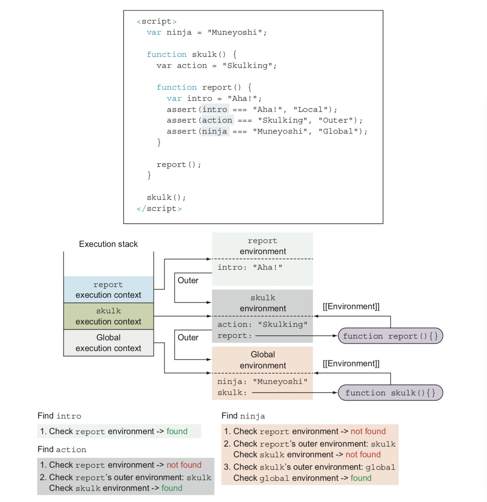

scopes
Whenever a function is created, a reference to the lexical environment in which the function was created is stored in an internal
(meaning that you can’t access or manip- ulate it directly) property named [[Environment]];
double brackets is the notation that we’ll use to mark these internal properties;
In following case, the skulk function will keep a reference to the global environment,
and the report function will keep a refer- ence to the skulk environment, because these were the environments in which the functions were created.
Whenever a function is called, a new function execution context is created and pushed onto the execution context stack.
In addition, a new associated lexical environment is created.
Now comes the crucial part: For the outer environment of the newly created lexical environment,
the JavaScript engine puts the environment referenced by the called function’s internal [[Environment]] property,
the environment in which the now-called function was created!

Regisering identifiers within lexical environments
The first phase is activated whenever a new lexical environment is created. In this phase, the code isn’t executed,
but the JavaScript engine visits and registers all declared variables and functions within the current lexical environment.
The second phase, JavaScript execution, starts after this has been accomplished; the exact behavior depends on
the type of variable (let, var, const, function declaration) and the type of environment (global, function, or block).
The process is as follows:
1. If we’re creating a function environment, the implicit arguments identifier is created,
along with all formal function parameters and their argument values. If we’re dealing with a nonfunction environment, this step is skipped.
2. If we’re creating a global or a function environment, the current code is scanned (without going into the body of other functions)
for function declarations (but not function expressions or arrow functions!).
For each discovered function declaration, a new function is created and bound to an identifier in the environment with the function’s name.
If that identifier name already exists, its value is overwritten. If we’re dealing with block environments, this step is skipped.
3. The current code is scanned for variable declarations. In function and global environments,
all variables declared with the keyword var and defined outside other functions (but they can be placed within
blocks!) are found, and all variables declared with the keywords let and const defined outside other functions and blocks are found.
In block environ- ments, the code is scanned only for variables declared with the keywords let and const,
directly in the current block. For each discovered variable, if the identifier doesn’t exist in the environ- ment,
the identifier is registered and its value initialized to undefined. But if the identifier exists, it’s left with its value.